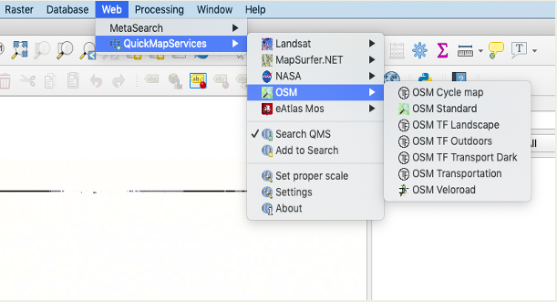
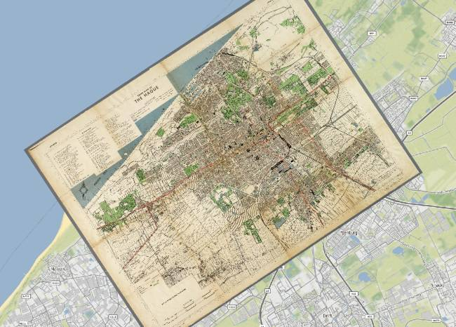
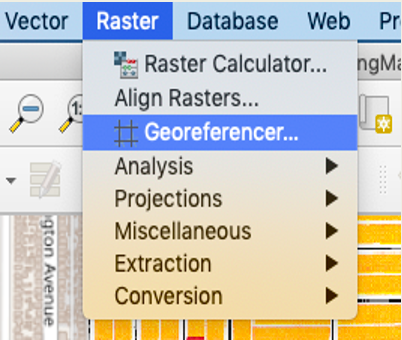
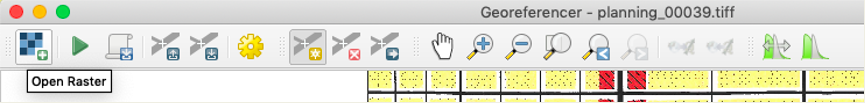
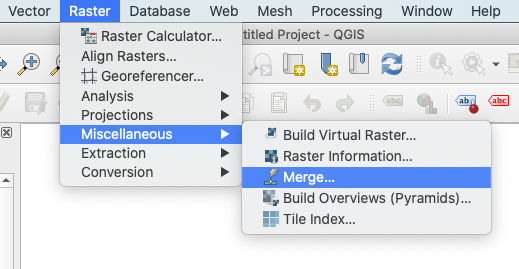
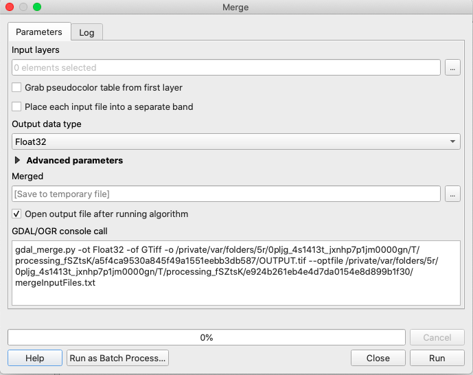
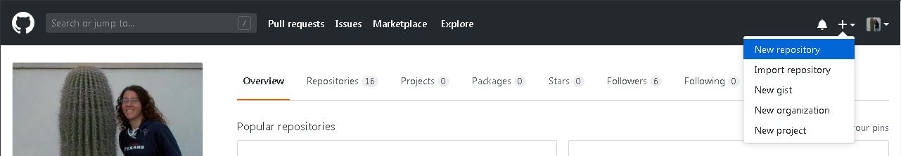
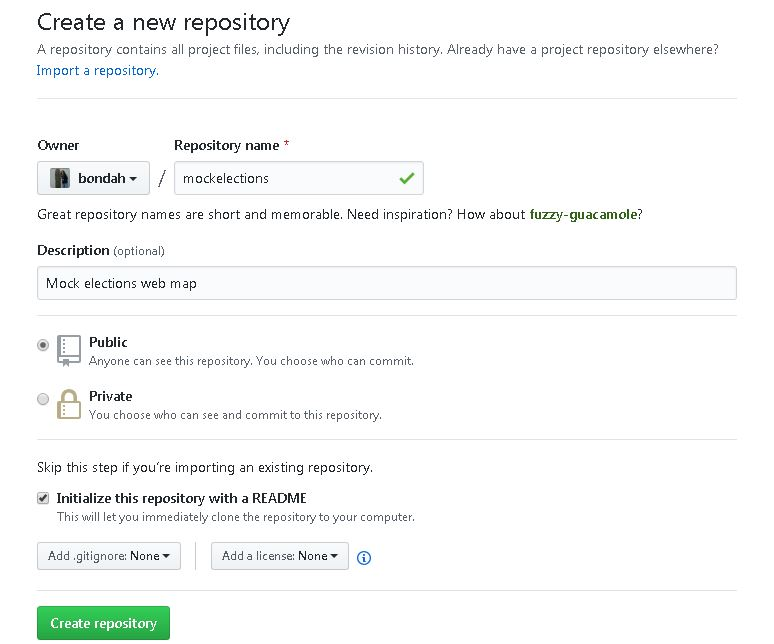
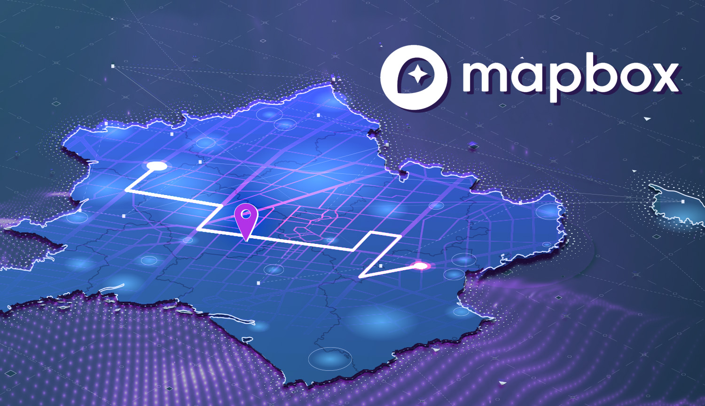

Introduction to QGIS
By Jack Tieszen
Contents
Who/What is this program for?

This workshop is an introduction to QGIS for those who aren't within the geography department.
We will cover: QGIS, georeferencing, geomerging, Mapbox, and Github publishing.
Goals of this workshop
By the end of the program we will have something like this:
https://visualizela.github.io/flaneur/What is GIS
Goals for GIS
Making maps that are Accessible, Public, and Interactive through utilizing new or already existing data in order to represent information in new ways.
Maps are a very good resource for presenting things like historical trajectories, population information, city planning, law history, and many other areas in multiple disciplines.
Disciplines that can use GIS in their research: Law, History, Medicine, Sociology, Climatology, Political Science, Art, Anthropology, Geology, Linguistics, Economics, and many more.
The use of GIS for non-geography disciplines

Further links
https://www.blogs.hss.ed.ac.uk/tools-of-the-trade/use-gis-humanities-social-sciences/https://libguides.wustl.edu/c.php?g=46935&p=4435069
https://gis.usc.edu/blog/the-application-of-geographic-and-information-science-gis-in-earth-sciences/
https://www.gisforscience.com/
Why QGIS
Open source cross-platform desktop geographic information system.
Works for Mac/PC/Linux.
Unlicensed and developed by various programmers around the world.

What we will be doing today
What you will need
QGIS version 3.10 or 3.12 which can be downloaded at qgis.org
3.10 is the most stable while 3.12 has more features, both work for this particular workshop.
Folder:
Features a file titled Map.tiff and Key.jpeg. These will be the materials that we will work with. They have been digitized at 600 dpi (dots per inch) at the VKC library.
Additional Plugins
There are a few things that you are going to want to add to your QGIS.
To find plugins go to the taskbar and click plugins – manage plugins, this will open a new window where you can search for the two plugins below:
QGIStoWeb isn’t necessary for this workshop, but it is useful if you are just publishing the map online.
Before using QGIS: Check your images
Before using QGIS: Make sure you have the right repository
For this project we are only using two images which doesn’t require much, but if you wish to pursue this further and start digitizing other maps/metadata then before you georeference get in the habit of labeling your map pieces and your metadata and putting them in places that are easy to access/re-access.
For the VKC government planning documents we used a google drive and input the names of each file into a large google sheet as a way to organize them.
Set up OSM Map
Follow the image within QGIS: Web - QuickMapServices - OSM - OSM Standard
Georeferencing: What is it?
Georeferencing is the process of assigning real-world coordinates to each pixel of the raster.
Taking the map image that you have and attaching that to an open street map.
Historical maps, planning maps, building plans, transportation plans, etc.
Georeferencing
Once the background map is created go to: Raster - Georeferencer
Georeferencing
A new window will pop up:
Click on Open Raster and it will prompt you to open the .tiff files from your computer.
Click on this to open up the image that you wish to georeferenced.
This series of buttons are to add georeferencing points: Add, delete, move.
Georeferencing
When you click on the “Add points” button the cursor will change.
Click on a point on the image and this pop-up window will show.
Click on the “From Map Canvas” button both windows (this plus the georeferencer) will go away to expose the OSM map behind it.
Simply click on the area that closely corresponds to the image area you clicked and that will connect the .tiff to the map.
You must do this at least six times for the georeference to work, the more points you put in the more accurate the georeference.
Georeferencing
Set the transformation parameters:
Note: You can do this immediately or you can wait until you’ve finished georeferencing which will cause this to pop up.
Transformation type: Polynomial 2
Resampling method: Nearest neighbor
Target SRS: EPSG3B57 – WGS 84 / Pseudo-Mercator
Compression: LZW
Geomerging
  Geomerging is only needed if you have multiple maps that you are going to input on a website that has a layer limit (like Mapbox).
If you followed the process by georeferencing individual files then this is what you should do.
At the taskbar go to Raster - Miscellaneous - Merge.
In the input layers section click the button with … on it and select all the layers you are trying to merge.
In the merged area click the … button and save the file to the desktop as Geomerge.
Then click the run button to merge the files.
Geomerging Continued
Once this is concluded there will likely be a black border that obscures a significant amount of the map.
Click on the information icon (the blue circle with an I in it) and click on the black border.
Take the number from that and go to the raster file Geomerge, open it by double-clicking on the merged file.
In the transparency page, you are going to put the number you found in the No Data Value - Additional no data value area, which will remove the black.
It will also shift the colors of the map to be brighter to go to the symbology page and mess around with the color rendering. For this map, I changed the blending mode, brightness, and contrast. This might be very different depending on the maps that you have. There is also the option to convert the raster from PCT to RGB by going to Raster - Conversion - PCT to RGB… and inputting the correct layer.
GitHub
Online version control that uses Git.
It allows you to host projects and uses Git to track the files.

Make a GitHub repository
Open an account and click the plus symbol at the top right.
Make a GitHub repository continued
 Give it a name (make sure not to use spaces) and a description.
Make it public or private.
Initialize with README is only necessary if you are starting from scratch, since we are copying from another repository it isn’t necessary.
Click the create repository button at the bottom.
QGIS to GitHub
my internship advisor for the past two quarters
https://maptimela.github.io/map-website/
Mapbox: What is it?
Mapbox is an open source mapping program.
Requires creating an account.
How to put layers into Mapbox
In mapbox you are going to want to create an account and go to “studio,” which can be found by clicking on your own icon.
Click on the “New Style” button and pick whichever style best suits your interest. For this we will choose the “basic” style template.
Once this has been accomplished go to the area which we will be adding map information, in this case Los Angeles, from the standard area which is Paris, France.
When you have found yourself in the area click on the layers tab (top left button near the components button) and then click on plus button (Add New Layer).
MapBox continued
Now click the upload data button and put in your modified .tiff files that you georeferenced from QGIS. Keep in mind that these files need to be .tiffs and they also need to be small enough files (8 bits) or else you will get an error message.
Once you upload your tiles make sure that you click and drag the files into the layers zone in the Mapbox. Also keep in mind that for certain profiles (Free tier) you can only put in 15 layers within a given map.
Once this is complete click the blue “Publish” button on the top right.
Flaneur

Copy this repository into your own by clicking the clone or download button:
https://github.com/kirschbombe/flaneur
You can either import this repository or you can take the files and add them into the one that you created.
Go to settings and set the source as a master branch in order to see the link so that you are able to visualize the website.
Flaneur continued
The first thing that you will do is eliminate/change things so that the website suits the information/maps that we will be putting into it.
The next few steps don’t need to be done in order but they should be accomplished before moving onto inputting the maps that we created through Mapbox into the github.
The first element that we will shift will be the home page. At its current state it is written exclusively about Flaneur which isn’t the information that we wish to provide.
On the page click on the home.md link then, one in, click the “edit this file” button on the top right of the screen, it will look like a pencil. Like so:
Flaneur continued

You are going to edit the page to reflect the new data.
Next, we are going to go to the _posts folder on the main page and delete 2018-02-24-boulevardier.md as it will be unnecessary for this map. You can also go to the images folder and delete the two boulevardier.jpg images.
Note: if you delete everything within a folder it deletes the folder with it. To remedy this or to create a new folder click the “create new file” button and in the name put the name of your new folder with a / after it so that it looks like flaneur/folder/ and then add a test document like test.txt. You will eventually remove this test document for other documents but keep it in until you do that lest you accidently delete the folder again.
Flaneur continued
Flaneur continued
Flaneur continued
Flaneur continued
Additional
Thank you